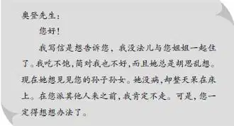
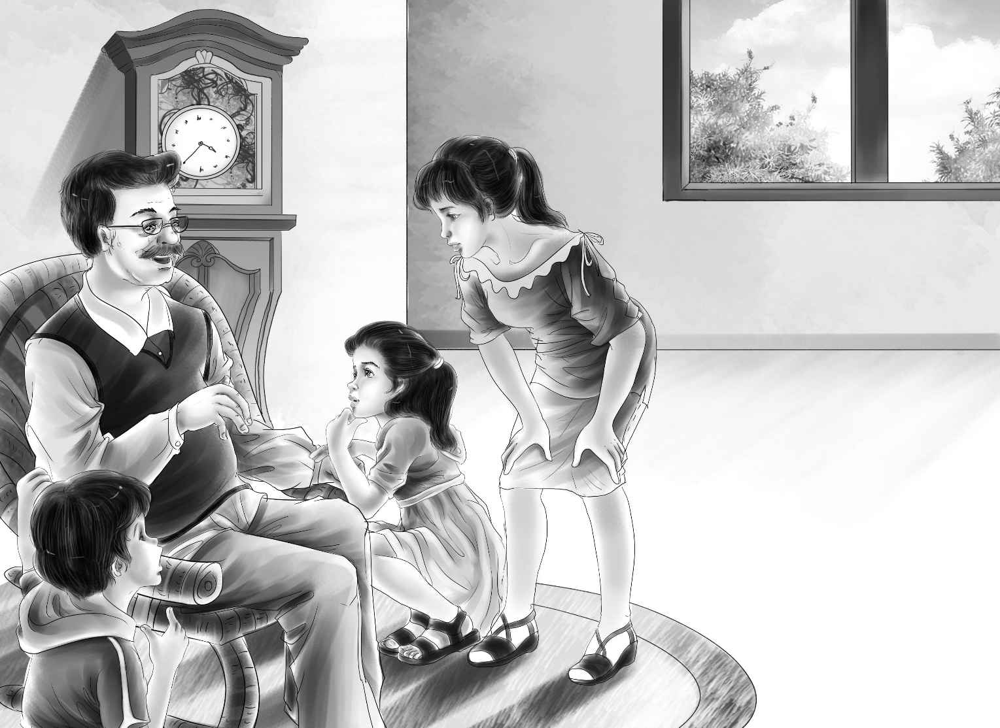

The Letter
孩子们谁也没有动。终于，亨利开口说道：“爷爷，把您一个人留在这儿，我们也吃不下饭。就让我们帮帮您吧！至少告诉我们是谁写的信！”
奥登先生挨个儿看了看孩子们，他们都在关切地看着他。
“好吧，”他慢慢地说，“告诉你们也无妨！信是麦琪写的，她是简姑婆的邻居。我曾先后派去三个保姆，但是每次简姑婆都把她们打发回来了。她不想让任何人呆在她身边，就算是帮忙也不行。”
“这也太恐怖了吧？”班尼感叹道。
“没错，班尼，确实让人很沮丧，”奥登先生说，“简姑婆一直很难相处。”
“那麦琪写了些什么呢？”亨利问。
奥登先生看了看大孙子亨利，从口袋里掏出一封信来。“你们看看就明白了，这就是那封信。”说着他把信递给了亨利。
班尼喊道：“快念吧，大点儿声！让我们都听听信里说了些什么！”
亨利看了看爷爷。奥登先生点了点头，亨利便大声念了起来：

大家沉默了好一会儿。维莉倚在爷爷的椅子扶手上，看着他说：“爷爷，我觉得我有办法帮得上忙。”
杰西笑了：“维莉，你跟我想的一样吗？”
“我猜是。”维莉微笑地看着姐姐。
“我觉得也是！”杰西大声说道，“爷爷，维莉和我想去照顾简姑婆。”
奥登先生没有回答。

“就让我们去吧，爷爷。”维莉央求道。
“好孩子，”奥登先生说，“不是我不想让你们去，我只是担心简姑婆会待你们不好。”
维莉说：“我们不担心这个。杰西和我可以做伴儿，而且我喜欢照看病人。”
“我知道，孩子。”奥登先生说，“好几次我生病，你都把我照顾得很好。”
“爷爷，快打电话！”班尼大声嚷嚷着，他一刻也不想再等了，“告诉麦琪，杰西姐姐和维莉姐姐去了，一切都会好起来的。”
“简姑婆没有电话。”奥登先生说。看到班尼一脸惊讶的样子，爷爷笑了笑。班尼以为每家每户都有电话呢！
“不过，我可以发电报，”奥登先生说，“他们可以在赛特维尔的火车站收到。”
“我来查查列车时刻表，”亨利站了起来，“我也好想去，我还没见过农场呢！”
“亨利，我也希望你能一起去！”杰西说，“可是女孩子去会更好一些，是吧，爷爷？如果一下子去了四个陌生的孩子，简姑婆会被吓着的。”
亨利找到了列车时刻表：“明天早上六点有趟车到农场。不过，你们得在车上睡觉了。”
“没关系。”杰西说。
“那么，”爷爷慢慢地说，“你们真要去的话，我就得好好和你们说一下。麦琪的哥哥叫山姆·威克斯，和他妻子住在隔壁。他们人很好，要是简姑婆待你们不好，你们可以去他们那儿住。”
奥登先生早已默默拟好了另一封电报，打算等孩子们一睡着就发给山姆。
“你俩必须答应我一件事，”奥登先生说，“每天得给我发一封电报。”
“没问题，我们保证做到！”杰西立刻答应道。
“快吃饭吧！”班尼说，“爷爷，难道您没闻到火腿和鸡蛋的香味吗？现在您该饿了吧？”
“是呀，好像确实有点饿了！”奥登先生故作讶异状，“在帮助简姑婆这件事上，恐怕谁也比不过你们姐妹俩。”
杰西朝维莉笑了笑，仿佛在说：“有趣的旅行就要开始了！”
维莉已经在想象远方的简姑婆了。
长这么大，她还没见过几个脾气暴躁的人呢。